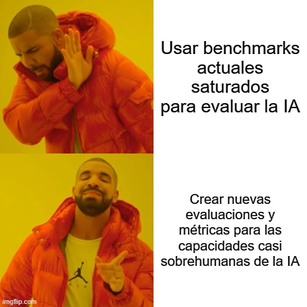

estrategIA #51 ·
Cambiar la vara de medir
El contexto
Los benchmarks son pruebas usadas para comparar las capacidades de las IAs. Con el lanzamiento de o1, el número planteaba qué hacer cuando los modelos obtienen resultados muy altos en las pruebas habituales. El meme propone buscar exámenes más difíciles para distinguir mejor sus capacidades.
Publicado en: estrategIA #51: Llega la era del razonamiento artificial: OpenAI lanza o1 y cambia las reglas del juego
Leer el texto de la imagen
Usar benchmarks actuales saturados para evaluar la IA Crear nuevas evaluaciones y métricas para las capacidades casi sobrehumanas de la IA
Marca de la herramienta visible en el original: imgflip.com.